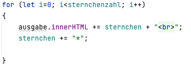

PORTFOLIO
How to: JavaScript
Skriptsprachen
- Programmiersprachen, die über einen Interpreter ausgeführt werden
- Scripting: Zusammensetzung von Kommandos für kleine Aufgaben
- Anforderungen: bei kleinen Aufgaben -> ohne komplexe Algorithmen/Datenstrukturen
Verknüpfungen
fehlende Überprüfungsmöglichkeit von Tippfehlern in Variablennamen
einfache Handhabbarkeit
- Konsequenzen: Einfache Sprachen (wenige Regeln/Konstrukte)
Dynamische Typprüfung
- Bsp.: JavaScript
Erweitert HTML -> dynamisches HTML
Im Browser interpretiert
JavaScript kann in HTML eingebunden werden, entweder als externe Datei und mit dem Aufrufen dieser oder durch script-Tags im HTML Code. Wenn mehrere HTML Dokumente den gleichen JavaScript Code nutzen sollen, empfielt es sich, die Datei auszulagern und in den Code in eine externen .js Datei zu packen. Persönlich nutze ich als Editor für JavaScript (und HTML) Virtual Studio Code, denn Tags und Befehle werden mir hier leicht aufgezeigt und empfohlen.
Im JavaScript Code sollte der Befehl "use strict"; ganz am Anfang genutzt werden, um die Ausführung des Programms zu wählen, die neuer ist, moderne Strukturen unterstützt und fehlerhafte Stellen beseitigt.
Durch den alert Befehl in JavaScript wird ein Pop-Up im Browser geöffnet, dass die Alert Nachricht ausgibt.
Durch einen prompt Befehl wird der Nutzer aufgefordert, etwas einzugeben, wie z.B. seinen Namen, sein Alter etc. Diese Information kann auch gespeichert und wiedergeben werden.
Kontrollausgaben beim Entwickeln
Durch verschiedene Ausgaben, wie z.B. durch den console.log Befehl, wird auf der Konsole des Browsers etwas ausgegeben. Es gibt verschiedenste Methoden des console Objekts, wie man in Befehle sehen kann.Typisierung, Variablen und Operatoren
Die Anzahl von Typen (von Variablen, Parametern und Objekteigenschaften) ist gering, da JavaScript vollständig dynamisch typisiert ist. Es ist daher nicht möglich, für eine Variable einen Typen anzugeben. Es gibt bool, number (Float, Integer), String, Objekte als Datentypen in js. Auch bereits definierte Variablen können jeden Datentyp speichern. Aus number a kann später String a werden. Variablen können durch let, var und const definiert werden. Let für Zugriff nur im Bereich {}, var für lokalen/globalen Zugriff und const für Konstanten. JavaScript unterscheidet außerdem nicht zwischen Ganzzahlen und Fließkommazahlen. Durch ein + zwischen Strings verkettet werden, durch ${} wird der Klammerinhalt berechnet. Berechnungen funktionieren analog zu denen in Java wie z.B. var a = 1*2; .Eine Variable mit dem Schlüsselwort var, die außerhalb einer Funktion/Schleife definiert wird nennt man globale Variable.
Eine Variable mit dem Schlüsselwort var, die innerhalb einer Funktion/Schleife definiert wird, nennt man lokale Variable.
ACHTUNG: Eine Variable, die innerhalb einer Funktion aber ohne var erzeugt wird, nennt man AUCH globale Variable.
Verzweigungen und Schleifen
Beide funktionieren genauso wie in java. Es gibt if/else und switch Verzweigungen und Schleifen wie for. Hier mal ein Beispiel für eine for Schleife:
Funktionen
JavaScript Funktionen sind gleichzustellen mit Methoden in Java. Man definiert sie, um den gleichen Code mehrmals zu verwenden indem man ihn aufruft. Funktionen können zum Beispiel so aussehen:
function meineFunktion(){
alert("Juhu! Meiner erste Funktion!");
}

Die Funktion kann dann in HTML aufgerufen werden und auch in einen Button gepackt werden und wird dann immer aufgerufen, wenn der Button geklickt wird. Es müssen hier nicht umbedingt alle Parameter definiert werden.
Es gibt auch vordefinierte Funktionen:
- parseInt() konvertiert einen String (z.B. 12) in ein Int.
- parseFloat() ist wie parseInt nur für Kommazahlen (müssen aber mit . getrennt werden)
- eval() interpretiert einen String
Außerdem gibt es Pfeilfunktionen, wie zum Beispiel:

Arrays, Objekte und JSON
Array
Ein Array speichert eine Reihe Variablen. In JavaScript sind alle Felder dynamisch. Das bedeutet, dass man sie mit einer bestimmten Größe oder als leeres Array anlegen kann. Wenn der Platz nicht reicht, erweitern sie sich automatisch. In den Arrays können alle möglichen Datentypen gespeichert werden und man kann sie sogar in einem Array mischen. Alle leeren Elemente werden auf undefined gesetzt.var Array = new Array(6); //neuer Array mit 6 Stellen
Array[2]="Wert"; //neuer Wert in Array
alert(Array[2]); //Wert auslesen
Objekte
Objekte sind Elemente einer Website wie Bilder mit Namen, Attributen, Methoden(Eigenschaften). Unter Befehle findest du auch den most basic Code zu einem Objekt. Genauso wie Arrays beschreiben Objekte kein einzelnes Element, sondern eine Sammlung davon. Hier gibt es aber keinen einfachen Index (wie bei Arrays).oder auch:
var Objekt = { eineEigenschaft: "Wert"; eineMethode: function() { alert(this.meineEigenschaft);} };
Falls du noch nach Infos suchst, schau hier vorbei: Mit Objekten arbeiten :)
jQuery
Bibliotheken und Frameworks
Eine Bibliothek ist eine Sammlung von Funktionen und Objekten. Sie werden für verschiedenste Aufgaben genutzt, zum Beispiel um das DOM zu verändern oder um mit HTML/CSS zu agieren.Bibliotheken machen die Entwicklung komplexerer Funktionen/Anwendungen etc. einfacher. Es gibt viele verschiedene JavaScript-Bibliotheken, die in einer Vielzahl von Kontexten verwendet werden können, einschließlich in Web-Anwendungen, mobilen Anwendungen und Server-seitigen Anwendungen. Einige beliebte JavaScript-Bibliotheken sind jQuery (was gleich weiter erklärt oder genutzt wird), Angular und React.
Dagegen sind Frameworks Zusammenstellungen von vorgefertigtem Code, der für die Website (/Web-Anwendung) genutzt werden kann. Frameworks vereinfachen die Entwicklung von Web-Anwendungen auch, da der Code wie gesagt bereitgestellt wird und er organisiert und klarer wird. Ein Beispiel für ein Framework ist Bootstrap, was unter diesem Link erklärt wird.
Anonyme Funktionen
Die .each()-Funktion erlaubt das Bearbeiten alles Elemente einer bestimmten Auswahl. Dazu wird an sie eine Referenz auf eine Funktion oder eine anonyme Funktion als Argument übergeben. Anschließend wird diese Funktion auf jedem Element der Auswahl ausgeführt. Um während des automatischen Schleifendurchlaufs auf die jeweiligen Elemente der Auswahl zuzugreifen benutzt man $(this).Events
Man nutzt Events, um auf Useraktionen zu reagieren. Zum Verwenden wird der Event-Handler genutzt (siehe unten).Maus Events
click //Kannst du dir denken, oder?
dbclick //Doppelklick
mousedown //drücken ohne loslassen
mouseup //loslassen
mouseover //bewegen ÜBER ein Element
mouseout //wegbewegen
mousemove //immer bei einer Bewegung
scroll //durch eine Seite scrollen
unload //Verlassen einer Seite (Achtung: fishy :/)
hover //kombiniert mouseover und mouseout
toggle //clicks: erster Klick erste Funktion, zweiter Klick zweite
//weitere stehen unten ausführlich!
Formular Events
submit //Eingabebutton
reset //Zurücksetzen
change //Status eines Formularfeldes ändern (RadioButton)
fokus //Feld im Fokus durch ändern
blur // Fokusfeld verlassen
Tastatur Events
keypress //Taste drücken, kontinuierlich
keydown //vor dem keypress Event, browserabhängig ob kontinuierlich oder einmal
keyup //Loslassen der Taste
Events in jQuery
Events in jQuery sind bestimmte Aktionen, die von Benutzern ausgelöst werden können, wie zum Beispiel das Klicken auf einen Button oder das Rollen mit der Maus über ein Element.Mit jQuery können wir spezielle Funktionen ("Handler") definieren, die ausgeführt werden, wenn ein bestimmtes Event stattfindet.
Beispiel:
$('#button').click(function() { // Hier kommt der Code, der ausgeführt werden soll, wenn der Button geklickt wird });
In diesem Beispiel haben wir ein Element mit der ID "button" ausgewählt und eine Funktion ("click") definiert, die ausgeführt wird, wenn der Button geklickt wird. Es gibt viele verschiedene Events in jQuery, die wir verwenden können, wie zum Beispiel "hover", "focus" oder "submit".
Event-Handler
Ein Event-Handler ist eine Funktion in JavaScript, die ausgeführt wird, wenn ein bestimmtes Ereignis eintritt. Ein Ereignis kann zum Beispiel sein, dass ein Benutzer auf einen Button klickt, dass ein Formular abgesendet wird oder dass ein Bild geladen wurde. Event-Handler werden häufig verwendet, um die Interaktion mit dem Benutzer zu ermöglichen und die Benutzeroberfläche einer Web-Anwendung zu verändern. Sie werden in der Regel mit dem addEventListener() Methode hinzugefügt, die einem Element im DOM (Document Object Model) zugewiesen wird.document.getElementById('my-button').addEventListener('click', function() {
console.log('Button wurde geklickt'); });
Handler ermöglichen es, dass die Web-Anwendung auf Ereignisse reagieren und entsprechende Aktionen ausführen kann.
Außerdem: Methoden von jQuery
ready-Funktion: stellt sicher, dass der Code erst ausgeführt wird, wenn das HTML in den Browser geladen wurde
hover-Event: stellt eine Kombination aus den Events mouseover und mouseout dar, erwartet daher auch zwei Funktionen als Argumente; eine wenn die Maus über das Event fährt und eine wenn sie sich entfernt
toggle-Event: kombiniert Klicks, erwartet auch zwei Funktionen; die Erste wird beim ersten Klick übergeben und die Zweite beim Zweiten
bind-Methode: ermöglicht Weitergabe weiterer daten an die Event-Handler-Funktion; verschiedene Events können verschiedene Informationen an die selbe Event-Handlich-Funktion übergeben
preventDefault-Methode: erlaubt das Unterbrechen des Verhaltens eines Links o.ä.
Event-Objekt: speichert Informationen über das Event, welches gerade stattgefunden hat, z.B. Position der Maus; Kann nur von dem gerade ausgelösten Objekt genutzt werden
Window-Objekt
Mit der open()-Methode kann man ein Browserfenster öffnen und Eigenschaften eines Browserfensters anpassen. Die Methode erwartet drei Übergabeargumente:var fenster = open('URL', 'nameDesFensters',eigenschaften);
falls du noch mehr Infos brauchst, hier stehen ganz viele : Window :)